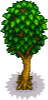
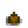
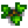
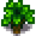
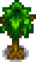
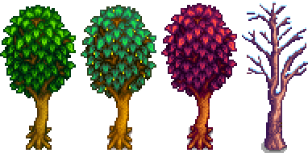
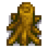
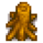
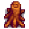
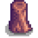

Maple Tree
| Maple Tree | |
 | |
| Information | |
| Seed | |
| Tapper Product | |
| Growth Time | Variable |
A Maple Tree is a common Tree that grows from a Maple Seed. It yields Maple Syrup every 9 days when tapped. It can be chopped down with an axe, producing Wood, Sap, possible Maple Seeds, and possible Hardwood (if the player is a Lumberjack). Normally, shaking a Maple Tree has a chance of producing a Maple Seed, but during the last two weeks of Fall (includes Fall 14), a Hazelnut is dropped instead.
A planted Maple Seed grows through four stages before reaching maturity (with twice as much time spent at stage 4). If fertilized, this takes five days (even in Winter). Otherwise, there is a 20% chance per day of growth, except in winter when trees do not grow. The median time to maturity is 24 days, although individual tree growth times will vary considerably.
Chopping a stage 2–3 tree with an axe has a chance to drop one wood, depending on foraging level. This doesn't happen when cutting it with other tools.
Maple Trees outside the farm (except in Pelican Town) can be chopped down or tapped. These trees will respawn as Stage 3 saplings (20% chance each day) and grow as normal after that, as long as the stump is removed, and there is nothing on the tree's tile.
Stages of Growth
| Stage 1 | Stage 2 | Stage 3 | Stage 4 | Stage 5 - Spring, Summer, Fall, Winter | Stump - Spring, Summer, Fall, Winter |
|---|---|---|---|---|---|
 |
 |
 |
 |
 |
    |
History
- 1.4: Fixed bug that caused a stage 2-3 sapling to make a scythe sound when watered. Fixed bug that prevented trees from dropping seeds and seeds disappearing when harvested if a Foraging level up occured during the day. Planting tree seeds outside the farm no longer requires the spot to be tilled. (This also prevents planting in non-tillable areas dug up by Artifact Spots in Winter).
| Trees | |
|---|---|
| Trees | Green Rain Trees • Mahogany Tree • Maple Tree • Mushroom Tree • Mystic Tree • Oak Tree • Palm Tree • Pine Tree |
| Fruit Trees | Apple Tree • Apricot Tree • Banana Tree • Cherry Tree • Mango Tree • Orange Tree • Peach Tree • Pomegranate Tree |
| Seeds | Acorn • Mahogany Seed • Maple Seed • Mossy Seed • Mushroom Tree Seed • Pine Cone • Mystic Tree Seed |
| Fruit | Apple • Apricot • Banana • Cherry • Mango • Orange • Peach • Pomegranate |
| Misc | Large Log • Large Stump • Tea Bush |